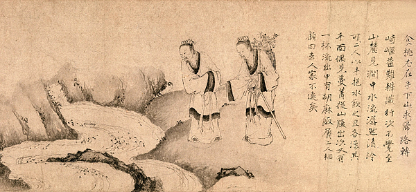
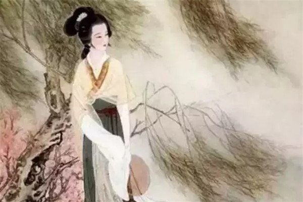

嫦娥后羿不認識?
《歸藏》，如今已缺失不全，但當中有兩條完全不相干的紀載。其中的「常娥奔月」就是嫦娥偷了西王母的仙藥，吃下去之後就飛上月亮；其中的「羿斃十日」寫的是后羿善射，想射下十個太陽就真的做到了。由上述可見這兩者是完全分開的劇情。

劉晨阮肇偶遇正妹搭訕......
遇到兩個神正妹，劉阮完全不認識兩正妹，但就跟著她們回家了。跟著回家嚇一跳，正妹家就兩張大床，還「施絳羅帳，帳角懸鈴，金銀交錯」掛聖誕樹裝飾到底要幹啥？接著侍女拿了美食美酒招待，再端出桃子招待，終於天黑了，正妹改以身體招待……

李清照逃難帶十車書?
物品不能全部載去,先把書籍中重而且大的印本去掉,又把藏畫中重複的幾幅去掉,又把古器中沒有款識的去掉。後來又去掉書籍中的國子監刻本、畫卷中的平平之作及古器中又重又大的幾件。經多次削減,還裝了十五車書籍。